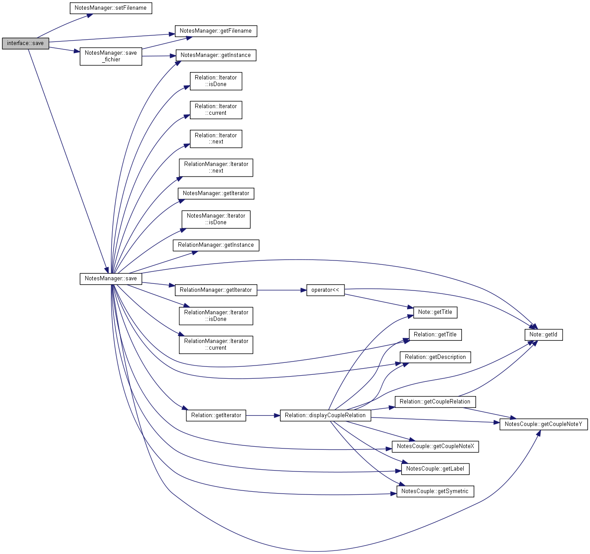

Inheritance diagram for interface:
Collaboration diagram for interface:

Public Slots | |
| void | update_model () |
| void | E_relation () |
| void | Aff_relation () |
| void | ViderCorbeille () |
| void | addAction_new_rel () |
| fonction outils, permettant de connecter, afficher l'action d'achiver une note a la page courante. | |
| void | OuvrirFichier () |
| Fenêtre permettant de selectionner/chargé un fichier de sauvegarde Met à jour le manager de note et les docks. More... | |
| void | CreerNote () |
| Ouvre une fenetre de dialogue de type Creation_Note, pour permettre la création d'une note. Connecte cette fennetre au docks. More... | |
| void | afficher_note (QString id, int i) |
| interface::afficher_note More... | |
| void | supp_dock_editer () |
| void | supp_dock_aff_rel () |
| void | supprimer_note () |
| void | close_page_note () |
| Ferme la note en cours, si elle est bien encore ouverte. | |
| void | save () |
| Permet de choisir un fichier de sauvegarde. More... | |
Signals | |
| void | S_update_model () |
| void | L_update_model () |
| void | A_update_model () |
Public Member Functions | |
| interface () | |
| Constructeur de la classe interface Fenêtre principale de l'application, gére tous les docks, effectue la liason entre les docks, les widget, et les boites de dialogues. More... | |
Detailed Description
Definition at line 53 of file interface.h.
Constructor & Destructor Documentation
◆ interface()
| interface::interface | ( | ) |
Constructeur de la classe interface Fenêtre principale de l'application, gére tous les docks, effectue la liason entre les docks, les widget, et les boites de dialogues.
- Parameters
-
Definition at line 29 of file interface.cpp.
Here is the call graph for this function:

Member Function Documentation
◆ afficher_note
|
slot |
- Parameters
-
id i
Definition at line 348 of file interface.cpp.
Here is the call graph for this function:

Here is the caller graph for this function:
◆ CreerNote
|
slot |
Ouvre une fenetre de dialogue de type Creation_Note, pour permettre la création d'une note. Connecte cette fennetre au docks.
- Parameters
-
Definition at line 257 of file interface.cpp.
Here is the caller graph for this function:
◆ OuvrirFichier
|
slot |
Fenêtre permettant de selectionner/chargé un fichier de sauvegarde Met à jour le manager de note et les docks.
- Parameters
-
Definition at line 197 of file interface.cpp.
Here is the call graph for this function:
Here is the caller graph for this function:
◆ save
|
slot |
Permet de choisir un fichier de sauvegarde.
- Parameters
-
Definition at line 217 of file interface.cpp.
Here is the call graph for this function:

Here is the caller graph for this function:

The documentation for this class was generated from the following files:
- OL13/interface.h
- OL13/interface.cpp